Disciplinas
-
ESTRUTURA DE DADOS-T01-2024-1 Concluído
Materiais
Vídeo 2 - Estrutura de Dados - Aula 21 - Árvores AVL. sendProf° ministrante: Norton T. Roman.
Conteúdo
Árvores AVL.
Árvores AVL.
- Balanceamento é importante Contudo, um balanceamento perfeito é algo computacionalmente caro.
- Que fazer?
- Nada... você está com sorte hoje?
- Ou podemos permitir um “bom” balanceamento.
- Em que pode haver um pouco de desbalanceamento.
- Algoritmo de Adelson-Velskii e Landis (as Árvores AVL).
- AVL é uma árvore de busca binária balanceada com relação à altura de suas subárvores
- Uma árvore AVL verifica a altura das subárvores da esquerda e da direita, garantindo que essa diferença não seja maior que ±1
- Esta diferença é seu Fator de Balanceamento
fb = hesg - hdir
- O fator de balanceamento é calculado a cada nó.
- E, para cada nó, a diferença de altura entre a subárvore da esquerda e da direita não pode passar de ±1
- Lembrando que a altura de uma árvore vazia é -1 O fator de balanceamento, ou alternativamente a altura do nó, é armazenada no próprio nó.
Note que, nesse caso, a inserção de um único elemento foi o suficiente para fazer com que uma árvore deixasse de ser AVL.
Contudo, somente nós no caminho do ponto de inserção até a raiz podem ter mudado sua altura.
Então, após a inserção, voltamos até a raiz, nó por nó, atualizando as alturas.
Se um novo fator de balanceamento para um determinado nó for 2 ou -2, ajustamos a árvore rotacionando em torno desse nó.
Árvores AVL - Rotação.
Existem dois tipos de rotação:
Rotação à esquerda: 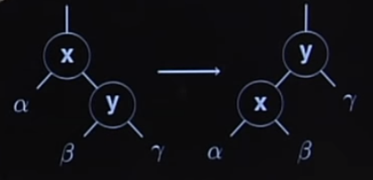 Rotação à direita: 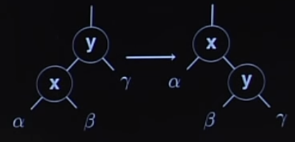Temos um desequilíbrio (fator de balanceamento 2).

Balanceamos rotacionando em torno desse nó.
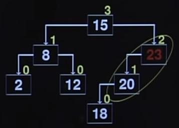 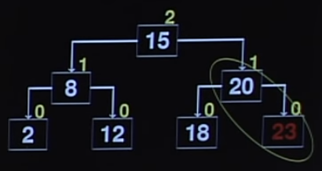- Considere a árvore AVL: 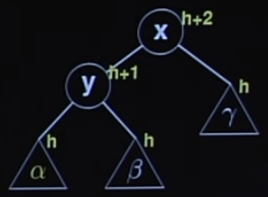
- O que pode acontecer se inserimos um elemento em a? 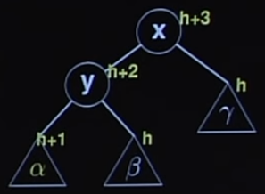
- Quebramos o balanceamento em x.
- Como consertamos isso?
- Fazendo a rotação à direita. 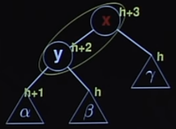
Inserções na parte mais externa da árvore são resolvidas com rotações simples.
Na subárvore esquerda do filho esquerdo do nó desbalanceado.
Na subárvore direita do filho direito desse nó.
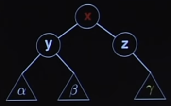E quando a inserção é na parte mais interna?
Na subárvore direita do filho esquerdo do nó desbalanceado
Na subárvore esquerda do filho direito desse nó
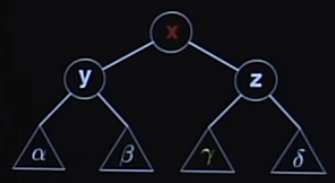- O que pode acontecer se inserimos um elemento em ẞ?
- Quebramos novamente o balanceamento em x.
Como consertamos isso?
Tentemos a rotação à direita
E tudo que fizemos foi mudar o ponto de desequilíbrio
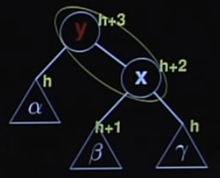Então, enquanto inserções na parte mais externa da árvore são resolvidas com rotações simples.
Inserções na parte mais interna da árvore são resolvidas com rotações duplas.
Fazemos uma rotação à esquerda se um nó foi inserido na subárvore direita do filho à direita:
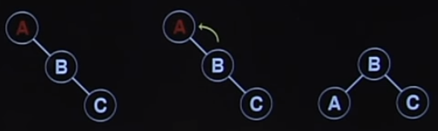Fazemos uma rotação à direita se um nó foi inserido na subárvore esquerda do filho à esquerda:
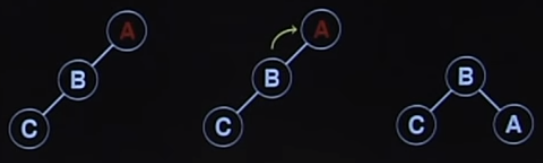Fazemos uma rotação direita-esquerda se um nó foi inserido na subárvore esquerda do filho à direita:
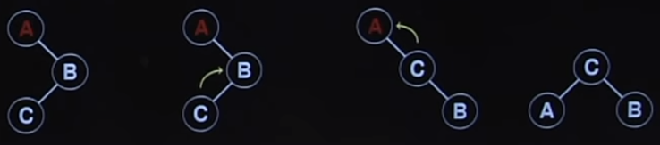